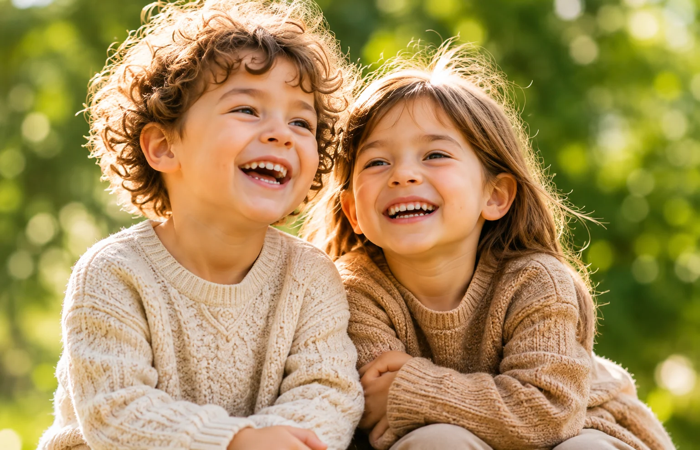
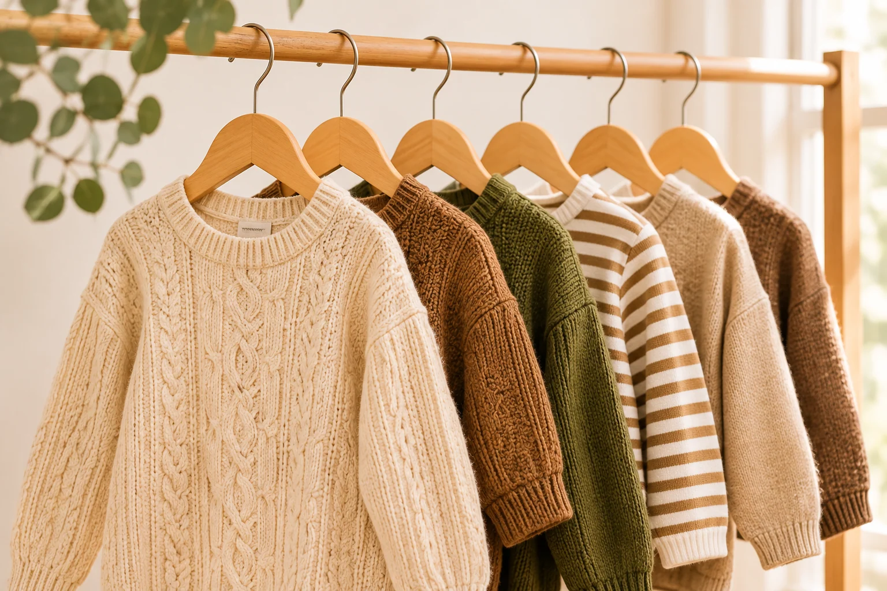

For the wonder of being little.
Childhood is made of muddy boots, pockets full of treasures and stories waiting to unfold.
Fresh from the wardrobe.

Little things to love.

A little note from us.
This is a design demonstration. No real order will be submitted or stored.